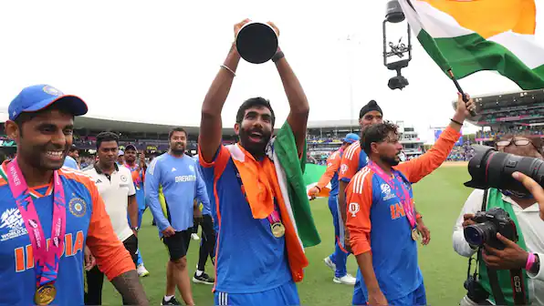

Jasprit Bumrah
Role: Bowler
Bio: Known for his unique bowling action and exceptional death bowling skills, Bumrah is one of the premier fast bowlers in the world.
Career Stats
| Format | Matches | Wickets | Best Bowling | Average | Economy | Strike Rate | 4-Wicket Hauls | 5-Wicket Hauls |
|---|---|---|---|---|---|---|---|---|
| Test | 35 | 128 | 6/33 | 22.5 | 2.7 | 50.2 | 6 | 2 |
| ODI | 85 | 136 | 6/19 | 24.4 | 4.5 | 5.5 | 4 | 1 |
| T20I | 63 | 100 | 4/14 | 20.2 | 6.7 | 13.4 | 0 | 0 |
Memorable Moments
Bumrah's 6 wickets for 33 runs against England in 2018 showcased his exceptional talent on a challenging pitch.
His phenomenal performance in the 2024 World Cup helped India win the finals, making him a key player in the tournament.